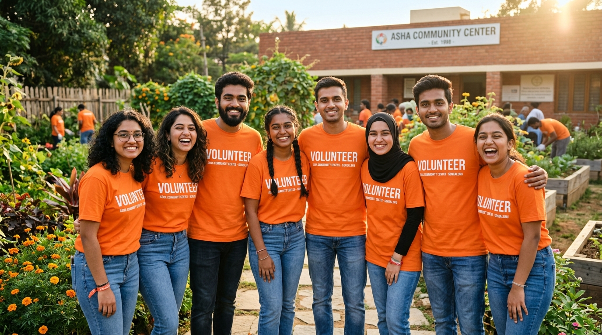

Food Hero
Accompany our electric vans to hotels and banquets, assist in temperature checks, pack containers, and hand over meals to night shelters.
Over 93% of people want to volunteer but don’t know where to start. We provide structured training, flexible weekend slots, and verified impact hours.
Clear 2–3 hour weekend shifts with assigned routes, vans, and emergency supervisor support.
Verified volunteer certificates, LinkedIn recommendations, and leadership opportunities for college students.
Join monthly city chapter meetups, food security workshops, and collaborate with passionate peers.
Choose the role that matches your schedule, skills, and comfort level.
Accompany our electric vans to hotels and banquets, assist in temperature checks, pack containers, and hand over meals to night shelters.
Work directly with community kitchen managers, coordinate headcounts, and assist in dignified plate distribution during dinner services.
On-call champion for late-night wedding receptions and grand banquets. Coordinate on-site surplus packaging after midnight.
Help document volunteer stories, craft educational posts about India's food waste challenge, and mobilize local college chapters.

Takes 2 minutes. Fill in your details below to join our city team.
No prior experience is necessary! We provide a comprehensive 45-minute digital orientation covering hygiene standards, digital thermometer testing, temperature safety windows, and compassionate community interaction.
Yes. Once approved, you gain access to our volunteer roster where you can pick up weekend shifts or late-night wedding rescue calls as your calendar permits.
Absolutely. We issue official Second Serve Volunteer Certificates documenting your verified rescue hours and meal distribution counts, recognized by universities and CSR programs.